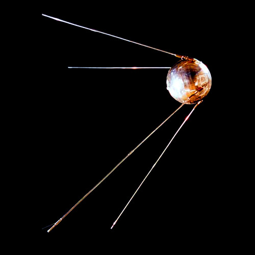
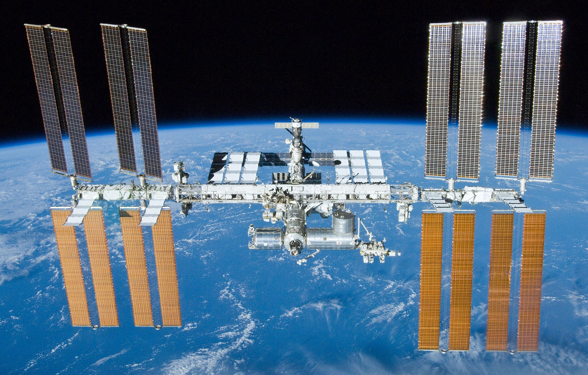

James Webb Space Telescope Mission

The James Webb Space Telescope (often shortened to JWST) is a space telescope which conducts infrared astronomy. As the largest optical telescope in space, its high resolution and sensitivity allow it to view objects too old, distant, or faint for the Hubble Space Telescope.[8] This will enable investigations across many fields of astronomy and cosmology, such as observation of the first stars, the formation of the first galaxies, and detailed atmospheric characterization of potentially habitable exoplanets.
WIKIPEDIAApollo 11 Mission

Apollo 11 (July 16–24, 1969) was the American spaceflight that first landed humans on the Moon. Commander Neil Armstrong and lunar module pilot Buzz Aldrin landed the Apollo Lunar Module Eagle on July 20, 1969, at 20:17 UTC, and Armstrong became the first person to step onto the Moon's surface six hours and 39 minutes later, on July 21 at 02:56 UTC. Aldrin joined him 19 minutes later, and they spent about two and a quarter hours together exploring the site they had named Tranquility Base upon landing. Armstrong and Aldrin collected 47.5 pounds (21.5 kg) of lunar material to bring back to Earth as pilot Michael Collins flew the Command Module Columbia in lunar orbit, and were on the Moon's surface for 21 hours, 36 minutes before lifting off to rejoin Columbia.
WIKIPEDIAChandrayaan-2 Mission

Chandrayaan-1 (transl.Moon-craft, pronunciation (help·info))[6] was the first Indian lunar probe under the Chandrayaan program. It was launched by the Indian Space Research Organisation in October 2008, and operated until August 2009. The mission included a lunar orbiter and an impactor. India launched the spacecraft using a PSLV-XL rocket on 22 October 2008 at 00:52 UTC from Satish Dhawan Space Centre, at Sriharikota, Andhra Pradesh.[7] The mission was a major boost to India's space program,[8] as India researched and developed indigenous technology to explore the Moon.[9] The vehicle was inserted into lunar orbit on 8 November 2008.[10]
WIKIPEDIASPUTNIC-1
Sputnik 1 (Sputnic-1 was the first artificial Earth satellite.[5] It was launched into an elliptical low Earth orbit by the Soviet Union on 4 October 1957 as part of the Soviet space program. It sent a radio signal back to Earth for three weeks before its three silver-zinc batteries ran out, and continued in orbit for three months until aerodynamic drag caused it to fall back into the atmosphere on 4 January 1958.
WIKIPEDIAInternational Space Station
The International Space Station (ISS) is the largest modular space station in low Earth orbit. The project involves five space agencies: NASA (United States), Roscosmos (Russia), JAXA (Japan), ESA (Europe), and CSA (Canada).[8][9] The ownership and use of the space station is established by intergovernmental treaties and agreements.[10] The station serves as a microgravity and space environment research laboratory in which scientific research is conducted in astrobiology, astronomy, meteorology, physics, and other fields.[11][12][13] The ISS is suited for testing the spacecraft systems and equipment required for possible future long-duration missions to the Moon and Mars.[14]
WIKIPEDIA